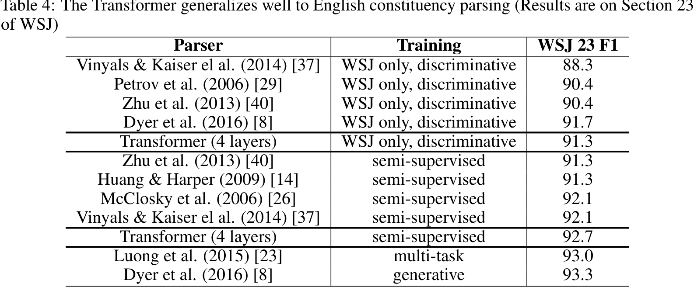

<!DOCTYPE html>
<html lang="en">
<head>
    <meta charset="UTF-8">
    <title>Research Paper Interpretation Blog</title>
    <link rel="stylesheet" href="https://stackpath.bootstrapcdn.com/bootstrap/4.3.1/css/bootstrap.min.css">
    <link rel="stylesheet" href="https://ajax.googleapis.com/ajax/libs/jqueryui/1.12.1/themes/smoothness/jquery-ui.css">
    <script src="https://ajax.googleapis.com/ajax/libs/jquery/3.5.1/jquery.min.js"></script>
    <script src="https://maxcdn.bootstrapcdn.com/bootstrap/4.5.2/js/bootstrap.min.js"></script>
    <script src="https://cdnjs.cloudflare.com/ajax/libs/jqueryui/1.12.1/jquery-ui.min.js"></script>
    <script src="https://cdn.jsdelivr.net/npm/marked@3.0.8/lib/marked.js"></script>
    <script id="MathJax-script" async src="https://cdn.jsdelivr.net/npm/mathjax@3/es5/tex-mml-chtml.js"></script>
    <script>
      window.MathJax = {
          tex: {
              inlineMath: [['$', '$'], ['\\(', '\\)']],
              displayMath: [['$$', '$$'], ['\\[', '\\]']],
          },
          options: {
              skipHtmlTags: ['script', 'noscript', 'style', 'textarea', 'pre', 'code', 'a']
          },
          loader: {load: ['[tex]/html']}
      };
    </script>
    <style>
        #content-wrapper {
            display: flex;
            flex-wrap: nowrap;
            justify-content: flex-start;

        }
        #table-of-contents ul {
        padding-left: 0px; /* Increase left padding for the entire list */
        padding-right: 10px; /* Optionally, add right padding */
        }

        #table-of-contents li {
            padding-bottom: 5px; /* Add some space below each list item */
        }

        #table-of-contents ul ul {
            padding-left: 0px;
        }

        #table-of-contents ul ul ul {
            padding-left: 30px;
        }
        .resizable {
            overflow: auto;
            height: 100vh; /* Adjust height to fill the viewport */
            width: 100%; /* Set initial width to 25% of the viewport */

        }
        .resizable2 {
            overflow: auto;
            height: 100vh; /* Adjust height to fill the viewport */
            padding-left: 50px; /* add padding to the left */
            padding-right: 30px; /* add padding to the right */

        }
        .border-right {
            border-right: 1px solid #ccc; /* Visual separator */
        }

         h1 {
            font-size: 2.5em;
            font-weight: bold;
            color: #123456;
            border-bottom: 2px solid #123456;
            margin-top: 1em;
            margin-bottom: 0.5em;
            padding-bottom: 0.3em;
        }

        h2 {
            font-size: 2em;
            font-weight: bold;
            color: #123456;
            border-bottom: 2px solid #123456;
            margin-top: 0.8em;
            margin-bottom: 0.4em;
            padding-bottom: 0.2em;
        }

        h3 {
            font-size: 1.75em;
            font-weight: bold;
            color: #123456;
            margin-top: 0.7em;
            margin-bottom: 0.35em;
        }
        h1::before {
            content: "H1 - ";
            color: #888;
            font-size: 0.3em;
        }

        h2::before {
            content: "H2 - ";
            color: #888;
            font-size: 0.3em;
        }

        h3::before {
            content: "H3 - ";
            color: #888;
            font-size: 0.3em;
        }


    </style>
</head>
<body>
<script id="article" type="text/plain" style="display: none;">

# Attention Is All You Need

- Authors: Ashish Vaswani avaswani@google.com &Noam Shazeer1 noam@google.com &Niki Parmar1 nikip@google.com &Jakob Uszkoreit1 &Llion Jones1 llion@google.com &Aidan N. Gomez1 &Lukasz Kaiser1 lukaszkaiser@google.com illia.polosukhin@gmail.com

- Affiliations: Google Brain Google Brain Google Research Google Research usz@google.com Google Research University of Toronto aidan@cs.toronto.edu Google Brain &Illia Polosukhin1 Equal contribution. Listing order is random. Jakob proposed replacing RNNs with self-attention and started the effort to evaluate this idea. Ashish, with Illia, designed and implemented the first Transformer models and has been crucially involved in every aspect of this work. Noam proposed scaled dot-product attention, multi-head attention and the parameter-free position representation and became the other person involved in nearly every detail. Niki designed, implemented, tuned and evaluated countless model variants in our original codebase and tensor2tensor. Llion also experimented with novel model variants, was responsible for our initial codebase, and efficient inference and visualizations. Lukasz and Aidan spent countless long days designing various parts of and implementing tensor2tensor, replacing our earlier codebase, greatly improving results and massively accelerating our research.Work performed while at Google Brain.Work performed while at Google Research.Work performed while at Google Research. Footnote 1: footnotemark: Footnote 2: footnotemark:


## Overview

In today's post, we shall unpack the nuances of a fascinating research piece titled "Attention Is All You Need," penned by Ashish Vaswani, Noam Shazeer, Niki Parmar, Jakob Uszkoreit, Llion Jones, Aidan N. Gomez, Lukasz Kaiser, and Illia Polosukhin. This research introduces the Transformer, an innovative network architecture for sequence transduction tasks that replaces recurrent and convolutional neural networks with an attention mechanism-based approach.

The primary motivation behind this research is to overcome the limitations of traditional models in learning dependencies between distant positions and achieving higher effective resolution. The Transformer model incorporates self-attention as the basic building block, revolutionizing the field of sequence transduction. By leveraging attention mechanisms, the Transformer effectively models dependencies between input and output sequences without considering their distance.

The contributions of this paper are both significant and groundbreaking. The researchers showcase the superiority of the Transformer model over existing models in terms of translation quality, parallelizability, and reduced training time. Experimental results demonstrate that the Transformer outperforms previous models on machine translation tasks, achieving a BLEU score of 28.4 on the WMT 2014 English-to-German translation task and a BLEU score of 41.8 on the WMT 2014 English-to-French translation task.

Now, let's delve into the core content of this paper and explore its innovative techniques and remarkable insights.

## Model Architecture
<div style="display: flex; overflow-x: scroll; align-items: center; padding: 5px; height: 600px;">
<div style="flex: 0 0 auto; margin-right: 10px; height: 100%; background: #fff; display: flex; justify-content: center; align-items: center;">


</div>
</div>
The Transformer model introduces a revolutionary approach to sequence transduction tasks through its encoder-decoder structure. The encoder maps input symbol representations to continuous representations, while the decoder generates an output sequence based on these continuous representations. Unlike traditional models that rely on recurrent or convolutional layers, the Transformer utilizes self-attention to compute representations without the need for sequence-aligned neural networks. This architectural shift enables the model to capture dependencies between distant positions more effectively.
### Encoder and Decoder Stacks

The heart of the Transformer lies in its encoder-decoder model, which consists of multiple layers. The encoder comprises six layers, each incorporating a multi-head self-attention mechanism and a position-wise fully connected feed-forward network. To facilitate information flow and maintain output dimensions, residual connections and layer normalization are employed. Similarly, the decoder also consists of six layers, with an additional sub-layer performing multi-head attention over the encoder stack's output. Notably, the decoder's self-attention sub-layer is modified to prevent positions from attending to subsequent positions, ensuring predictions depend solely on known outputs.
### Attention

The paper introduces the concept of attention in neural networks and presents the "Scaled Dot-Product Attention" mechanism. This attention function computes queries on a set of inputs and compares dot-product attention with additive attention. The authors also introduce multi-head attention, enabling the model to attend to different representation subspaces. The Transformer leverages attention in three key areas: encoder-decoder attention, self-attention in the encoder, and self-attention in the decoder. These attention mechanisms play a crucial role in capturing contextual information and improving the model's performance.
### Positionwise FeedForward Networks

Position-wise Feed-Forward Networks are integrated into both the encoder and decoder layers of the Transformer model. These networks consist of two linear transformations separated by a ReLU activation function. The input and output dimensions of these networks are both set to 512, with an inner-layer dimensionality of 2048. This design allows the model to process each position independently within the network architecture.
### Embeddings and Softmax

To facilitate sequence transduction, the paper adopts embeddings and softmax as part of the Transformer model. Input and output tokens are converted into vectors of dimension $d_{\text{model}}$ using learned embeddings. The decoder's output is transformed into predicted next-token probabilities through a linear transformation and softmax function. By sharing the weight matrix between the embedding layers and pre-softmax linear transformation, the model achieves enhanced performance. Additionally, multiplying the weights in the embedding layers by $\sqrt{d_{\text{model}}}$ further improves the model's capabilities.
### Positional Encoding

To incorporate sequence order in a model that lacks recurrence and convolution, the Transformer introduces positional encoding. The authors utilize sine and cosine functions to generate positional encodings, with each dimension corresponding to a sinusoid. These sinusoidal positional encodings form a geometric progression, allowing the model to attend to relative positions within a sequence. Although learned positional embeddings were experimented with, the paper demonstrates that the sinusoidal version yields similar results. This approach enables the Transformer to handle sequences of varying lengths effectively.
## Why SelfAttention

In the "Why Self-Attention" section, the authors compare self-attention layers with recurrent and convolutional layers for sequence transduction tasks. They highlight several advantages of self-attention, including computational efficiency, parallelizability, and improved handling of long-range dependencies. Unlike recurrent layers, self-attention layers have a constant number of operations and are faster when the sequence length is smaller than the representation dimensionality. Restricting self-attention to a neighborhood can enhance computational performance for very long sequences. Convolutional layers, on the other hand, require multiple layers to connect all positions, while separable convolutions have similar complexity to a combination of self-attention and point-wise feed-forward layers. The authors also mention that self-attention can lead to more interpretable models.
## Training
<div style="display: flex; overflow-x: scroll; align-items: center; padding: 5px; height: 600px;">
<div style="flex: 0 0 auto; margin-right: 10px; height: 100%; background: #fff; display: flex; justify-content: center; align-items: center;">

</div>
</div>
The paper provides insights into the training regime employed for the Transformer models used in their study. The machine translation models were trained on the WMT 2014 English-German and English-French datasets. The English-German dataset consisted of 4.5 million sentence pairs, while the English-French dataset contained 36 million sentences. Byte-pair encoding was used to encode the sentences, resulting in shared and word-piece vocabularies for English-German and English-French, respectively. The training data was batched based on approximate sequence length, with each training batch containing approximately 25,000 source tokens and 25,000 target tokens. The models were trained on a single machine with 8 NVIDIA P100 GPUs for either 12 hours or 3.5 days, depending on the model size. The Adam optimizer was employed with specific hyperparameters, including $\beta_{1}=0.9$, $\beta_{2}=0.98$, and $\epsilon=10^{-9}$. The learning rate was adjusted during training using a formula that accounted for the model size and step number. Regularization techniques such as Residual Dropout, Dropout on embeddings and positional encodings, and Label Smoothing were also employed.
## Results
<div style="display: flex; overflow-x: scroll; align-items: center; padding: 5px; height: 600px;">
<div style="flex: 0 0 auto; margin-right: 10px; height: 100%; background: #fff; display: flex; justify-content: center; align-items: center;">


</div>
</div>
The Transformer model's performance was evaluated on machine translation tasks, specifically English-to-German and English-to-French translation. The big transformer model achieved a new state-of-the-art BLEU score of 28.4 on the English-to-German task, surpassing previously reported models by more than 2.0 BLEU. Even the base model outperformed all previously published models and ensembles at a fraction of the training cost. On the English-to-French task, the big model achieved a BLEU score of 41.0, outperforming previous single models at a significantly lower training cost. The paper also explored various model variations and demonstrated their impact on performance. For instance, increasing the maximum output length and using a beam size of 21 improved translation quality. The Transformer model's superiority over other architectures was evident in the results, positioning it as a significant contribution to sequence transduction tasks.
## Review and Appraisal

The Transformer model presented in this paper marks a significant milestone in the field of sequence transduction. By leveraging attention mechanisms and eliminating recurrent layers commonly used in encoder-decoder architectures, the Transformer achieves state-of-the-art performance on machine translation tasks. The paper's thorough exploration of the model's architecture, attention mechanisms, and training techniques provides valuable insights for researchers and practitioners. However, the summary lacks discussion on the limitations of the model and additional empirical analysis. Future research can focus on extending the Transformer to other tasks beyond text, such as images, audio, and video, and exploring local, restricted attention mechanisms for handling large inputs and outputs. The code used for training and evaluating the models is provided, enabling further experimentation and development in the field. Overall, this paper opens up exciting possibilities for attention-based models and paves the way for future advancements in sequence transduction tasks.
</script>
<div class="container-fluid">
    <div id="content-wrapper"> <!-- Add this wrapper -->
        <div class="resizable border-right pt-5 pl-3" id="table-of-contents">
           <!-- automatically generated table of contents will be placed here -->
        </div>
        <div class="resizable2 pt-5">
            <div id="blog-post-content" class="markdown-body">
                <!-- Markdown content will be placed here -->
            </div>
        </div>
    </div>
</div>

<script>
$( function() {

  $(".resizable").resizable({
      handles: 'e',
      alsoResize: ".resizable2",
  });
  $(".resizable2").resizable({
      handles: 'w',
      alsoResize: ".resizable",
  });
} );

marked.setOptions({
    breaks: true,
    pedantic: false,
    smartLists: true,
    smartypants: false
});

var markdownContent = document.getElementById('article').textContent

// Generate table of contents
function generateTableOfContents(markdown) {
    let toc = "<ul>", tocDepth = 0;
    const headers = markdown.match(/^#+\s.*$/gm);

    if (headers) {
        headers.forEach(header => {
            let headerLevel = header.match(/^#+/g)[0].length;
            let headerText = header.replace(/^#+\s/, "");
            const anchor = headerText.toLowerCase().replace(/\s+/g, "-");
            markdown = markdown.replace(header, `<a id="${anchor}"></a>\n\n${header}`);

            while (tocDepth < headerLevel) {
                toc += "<ul>";
                tocDepth++;
            }

            while (tocDepth > headerLevel) {
                toc += "</ul>"
                tocDepth--;
            }

            toc += `<li class="toc-level-${headerLevel}"><a href="#${anchor}">${headerText}</a></li>`;
        });

        while (tocDepth > 0) {
            toc += "</ul>";
            tocDepth--;
        }
    }

    document.getElementById("table-of-contents").innerHTML += toc;
    return markdown;
}

document.getElementById('blog-post-content').innerHTML = marked(generateTableOfContents(markdownContent));

// MathJax typeset
MathJax.typesetPromise();
</script>

</body>
</html>